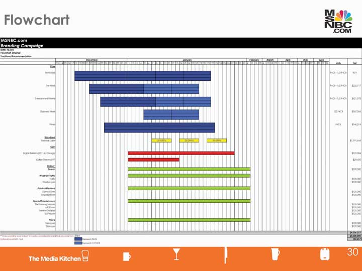
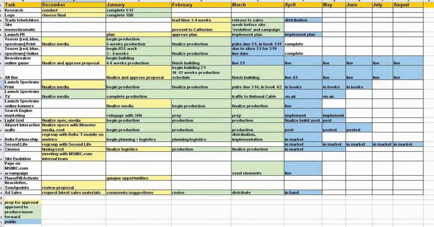

After studying this section, students should be able to do the following:
Message objectives take four forms that generally parallel the adoption life-cycle of the product:
AwarenessThe first step in introducing a new product or brand: letting consumers know it exists. is the first step in introducing a new product or brand to consumers or introducing an existing product to a new population of consumers.
AssociationPairing the product with a positive message or image, aimed at giving the consumer a positive feeling about the product. means giving the consumer a clear, memorable reason to buy the product—associating the brand with a relevant quality. This reason is known as the unique selling proposition (USP)A clear, memorable reason to buy the product., and is usually just one short sentence. For example, when FedEx first introduced its overnight package delivery service, its USP spelled out, “When it absolutely, positively has to be there overnight.”
ReminderA message aimed at helping consumers keep the product in mind and remember to buy it again. messages help the consumer recall the brand and remember to buy the product again. Reminder is used for more mature products, especially seasonal ones. For example, 1-800-Flowers’s outdoor strategy works because “flowers aren’t something we contemplate frequently,” said Jodi Senese, executive vice president of marketing at CBS Outdoor.Quoted in “The Results Issue,” Brandweek, July 23, 2007, 28.
PersuasionAdvertising aimed at getting consumers to switch to a new brand. tries to convince consumers of a mature product category to switch brands.
Media planningThe process of choosing one or more media vehicles to reach the target audience and achieve the message objectives. is the process of choosing one or more media vehicles to reach the target audience and achieve the message objectives. This means deciding which media vehicle to use, when to use the media vehicle, and where to use the media vehicle.
Planning decisions include audience selection and where, when, and how frequent the exposure should be. Thus, the first task for a media planner is to find out when and where people in the target market are most likely to be exposed to the communication. This is the apertureThe “window” delineating when and where an advertiser can reach the target market for a communication., the best “window” to reach the target market.
SS+K, msnbc.com, and The Media Kitchen worked through a few iterations of media plans before they settled on the final buy. As the lead agency, SS+K was responsible for ensuring that the paid media, nonpaid media, PR, and asymmetric efforts all contributed to the goals set out for the campaign.
Figure 10.10
One of The Media Kitchen and SS+K’s proposed media plans for the msnbc.com campaign. The different colors represent the different media and when they will launch.
Media Negotiations
Within the media agency, there are a few key people responsible for the planning and implementation of the campaign. The media planner strategically lays out the plan with standard media rates in the budget line. Once the plan is approved, the media buyer negotiates the rates and costs with the media sales representative. The media sales representative negotiates on behalf of the media, whether it be a rep from the Wall Street Journal, ESPN, or Rotten Tomatoes.
During the negotiation process, rates can change based on how much the advertiser will commit to, how long they will commit the funds, and other factors that support the business relationship. One thing that comes out of this for the advertiser is “added value.” Added value can be additional pages or runs in a particular medium; it can also be a survey or access to a medium’s database.
A common place for these negotiations to take place is the media upfronts. Starting in spring, media outlets will host parties and meetings with various media buyers, planners, and advertisers. Networks share their programming in order to excite advertisers about where their ads can air in the future.
Media vehicle choice is driven by market coverageThe extent to which a given media vehicle reaches the target audience., which is the extent to which a given media vehicle reaches the target audience. For example, local newspapers, radio stations, billboards, and direct mail campaigns are cost effective when they target a population that lives in a specific region, whereas national newspapers, TV, and online are better for nationwide campaigns. Specialized magazines and online media are particularly useful for target consumers who have specific interests. Online media also offers the advantage of real-time tracking—you know instantly whether consumers are clicking through to your site and how much time they spend at the site.
Market coverage tells advertisers what a specific vehicle can do for them, but that doesn’t mean that any one vehicle can do the whole job. Often, a media plan requires multiple media to achieve the advertiser’s goals. The media scheduleThe planner’s best estimate of which media will be most effective to attain the advertising objective(s) and which specific media vehicles will do the most effective job. outlines the planner’s best estimate of which media will be most effective to attain the advertising objective(s) and which specific media vehicles will do the most effective job.
When she creates the media schedule, the planner considers factors such as the match between the demographic and psychographic profile of a target audience and the people a media vehicle reaches, the advertising patterns of competitors, and the capability of a medium to adequately convey the desired information. The planner must also consider factors such as the compatibility of the product with editorial content. For example, viewers might not respond well to a lighthearted ad for a new snack food during a somber documentary on world hunger.
When she analyzes media, the planner assesses advertising exposureThe degree to which the target market will see an advertising message in a specific medium., the degree to which the target market will see an advertising message in a specific medium. Media planners speak in terms of impressionsThe number of people who will be exposed to a message that appears in one or more media vehicles., the number of people who will be exposed to a message that appears in one or more media vehicles. For example, if fifty million people watch American Idol on Fox, then each time an advertiser runs an ad during that program, it gets fifty million impressions (clue: that’s a lot). If the advertiser’s spot runs three times during the program, the impression count would be 150 million (even though some of these impressions would represent repeated exposure to the same viewers).
ReachThe percentage of the target audience that is exposed to any of the media vehicles in the media plan during a specified time period. refers to the percentage of the target audience that is exposed to any of the media vehicles in the media plan during a specified time period. Choosing the media vehicle with highest reach means that more people will be exposed to the campaign. For example, if a media plan targets the roughly five million women who are eighteen to twenty-five years old, then a reach of fifty means that 50 percent, or 2.5 million, of the target audience will see at least one of the media vehicles in the media plan. Reach only counts viewers once. If a person sees the same ad multiple times in one medium, or even if they see the ad in different media, it still counts as only one person for the purposes of calculating reach.
A related term, frequencyThe average number of times that target consumers are exposed to the media plan., refers to the average number of times that target consumers are exposed to the media plan. Frequency is important if the advertiser believes that consumers need multiple exposures to the campaign before buying the product or taking action. Achieving both broad reach and high frequency is very expensive—doubling the reach and doubling the frequency at the same time requires buying more than four times as many media impressions.
Say that a media planner wants to be sure her advertising for the Rockstar energy drink effectively reaches college students. She learns that 10 percent of the target market reads at least a few issues of Wired each year (that’s reach). She may also determine that these students on average are likely to see two of the ten ads that Rockstar will run in Wired during the year (that’s frequency). Now, she calculates the magazine’s gross rating points (GRPs)A calculation made by multiplying reach times frequency. by multiplying reach times frequency, which in this case allows her to compare the effectiveness of Wired to that of alternative media vehicles. By using this same formula, the planner could then compare this GRP number to that of another magazine or to the GRP she would get if she placed an ad on TV or sponsored a Maroon 5 concert tour on college campuses.
Although some media vehicles deliver superior exposure, they may not be cost efficient. More people will see a commercial aired during the Super Bowl than during a 3:00 a.m. rerun of an old Will Ferrell movie. But the advertiser could run late-night commercials every night for a year for the cost of one thirty-second Super Bowl spot. To compare the relative cost effectiveness of different media and of spots run on different vehicles in the same medium, media planners use a measure they call cost per thousand (CPM)Metric that reflects the cost to deliver a message to one thousand people.. This figure reflects the cost to deliver a message to one thousand people. CPM allows advertisers to compare the relative cost effectiveness of different media vehicles that have different exposure rates.
Table 10.1 Cost Per Thousand Example
|
Cost per thousand (CPM) Calculation CPM = ad cost × 1,000 circulation |
|
|
Cost of 4-color ad in Sports Illustrated = $320,000 Circulation of Sports Illustrated = 3,150,000 |
CPM for Sports Illustrated ad = $320,000 × 1000 = $101.59 3,150,000 To reach 1,000 Sports Illustrated readers |
A media vehicle’s popularity with consumers determines how much advertisers must pay to put their message there. Television networks are concerned about the size of their audiences because their advertising rates are determined by how many viewers their programming attracts. Similarly, magazines and newspapers try to boost circulation (that explains all the free issues you get) so they can charge higher rates to their advertising clients.
Part of the media planning process includes keeping track of your target reach and frequencies so that you can measure success at the completion of the campaign.
See the results from msnbc.com’s effort later in Chapter 14 "ROI: msnbc.com Decides if the Campaign Worked".
Size matters: ad space costs money, so advertisers think carefully about the size of ads. Larger or longer ads cost more but provide more in terms of space to tell a story and exposure to catch the consumer’s eye. A double-page magazine ad is more noticeable than a half-page ad. Short or small ads allow more frequency, more reach, or a longer campaign—an advertiser can afford to buy many more impressions in many more media vehicles with a small ad.
Historically, TV advertisers only bought sixty-second spots. But allocating the budget to thirty-second or fifteen-second spots improves the advertiser’s reach. The company can reach more people and get a better reach frequency at a lower cost. Shorter spots may direct viewers to a Web site where they can get additional information. Still, sometimes longer is better. In radio, advertisers have found that longer ads work better than short ones: spots of forty-five seconds or more were more effective than shorter spots.Radio Ad Effectiveness Lab, “Radio Effectiveness and Execution,” March 2004, http://www.rab.com, by paid subscription (accessed February 12, 2009).
Media planners rely upon three basic scheduling patterns:
Continuity scheduling means spreading the media spend evenly across the duration of the campaign.
Flight scheduling alternates periods of heavy advertising with periods of no advertising. For example, Moët brand champagne traditionally uses flight advertising; it schedules the bulk of its advertising around the holidays and year end.
Pulse scheduling is a combination of continuity and flight scheduling. With pulse scheduling, advertisers maintain an ongoing low level of advertising to remind the consumers of the brand, interspersing heavy advertising around particular times of the year.
Often one vehicle can’t accomplish all the goals of the campaign. For instance, no single vehicle might have the market coverage needed for the desired reach. Or it may be too expensive to achieve the desired frequency. Furthermore, some media vehicles lack the needed reach, are too expensive for the desired frequency, or are not effective for some aspects of the campaign. TV is expensive but lets the advertiser tell a good story about a new product. Magazines and print can reach specific demographics and deliver persuasive information. Billboards and other out-of-home vehicles are cheap and provide the reach and frequency to strengthen brand awareness and remind consumers of the product.
New media can stimulate buzz that spreads the message further. A recent report based on data from three thousand panelists in six major markets found that multiplatform advertisingTechnique that exposes consumers to the same ad message on multiple platforms. increases reach over individual platform advertising in a nonadditive way; in other words, the whole is greater than the sum of the parts. When consumers are exposed to the same ad message on multiple platforms, the campaign’s effectiveness gets a bigger boost in awareness or intention to buy.“Cumulative Value of Multi-Platform Advertising,” Center for Media Research, July 17, 2008, http://www.mediapost.com/ (accessed July 17, 2008).
With not a lot of money to spend, the California Avocado Commission (CAC) created an integrated campaign to “reach the consumer wherever he or she might be—in the car, at work, at home, in the grocery store and at restaurants—with the ‘Irresistible California Avocado’ message,” said Jan DeLyser, CAC’s vice president of marketing. “All of the elements worked together to build brand awareness and strengthen demand for California Avocados.” The CAC used a combination of radio spot advertising, outdoor advertising, online banner ads, trade communications, public relations, POS (point-of-sale) materials, and a dedicated Web site.
To encourage retailers to put up an in-store display, CAC provided them with the POS materials. Retailers could then enter their display in a retailer-only challenge. Every qualified entry automatically received a $20 Amazon.com gift card, and five randomly selected grand prize winners were awarded an Apple 30GB iPod. Dozens of stores participated.
Results: the campaign generated millions of impressions and over a hundred thousand consumer entries to its game show–style “California Avocado Irresistible Challenge” to win a 2007 Toyota Prius.Quoted in “California Avocado ‘Irresistible Challenge’ Attracts Nearly 400K Web Hits,” Progressive Grocer, October 10, 2007, 1.
As media vehicles proliferate and consumers divide their time between TV, magazines, outdoor activities, computer games, etc., advertisers feel the need to diversify their media mixes. “You are going to see us more and more fragmented in our spending,” said Jim Stengel, P&G’s (recently retired) chief marketing officer. “We are spending a lot more on interactive and a lot more on mobile as that makes its way around the world. The trend of the past five years will continue, which is that TV advertising will go down as a percentage of our spending, and we will continue to move money to where the consumers are. The interesting news in all of this is that consumers are spending more time with media than ever. If the content is good, consumers will spend an awful lot of time with media.”Quoted in Geoff Colvin, “Selling P&G,” Fortune, September 18, 2007, http://money.cnn.com/magazines/fortune/fortune_archive/2007/09/17/100258870/index.htm?postversion=2007090511 (accessed September 18, 2007).
SS+K pulls together its launch plan: the msnbc.com campaign aimed to reach News Explorers in ways that would get them to pay attention to the brand. The campaign combined elements of the paid media plan that were designed to increase reach and impressions above with elements of product enhancement (new logo, site design, screensaver) and nonpaid media (public relations, new and interesting asymmetric ideas).
Figure 10.11
SS+K’s launch plan for the msnbc.com campaign. Notice the many “moving parts” involved in coordinating paid media that we learned about in this chapter and other elements, including public relations (Chapter 9 "Choose Your Communication Weapons: SS+K Decides Upon a Creative Strategy and Media Tactics"), logo (Chapter 8 "Create a Strategy: SS+K Puts Its Research to Use as the Agency Creates the Brief"), and asymmetric ideas (Chapter 8 "Create a Strategy: SS+K Puts Its Research to Use as the Agency Creates the Brief"). It was important for the first branding campaign to have a big push in order to create noise in the marketplace.
Media planning is the process of choosing one or more media vehicles to reach the target audience and achieve the message objectives. In most cases the best plan combines several media platforms to ensure that the message breaks through advertising clutter. Media planners assess the characteristics of different media including their cost and effectiveness to decide upon an optimal mix. They use standard measures such as reach and frequency to compare apples and oranges (e.g., TV and billboards), though the increasing use of new media makes this comparison more difficult because industry standards have not yet evolved.